Розвиток Windows
Коротка історія розвитку операційної системи Windows.
Windows являє собою ціле сімейство операційних систем, розроблених компанією Microsoft. Вона виросла з графічної надбудови над системою MS-DOS в самостійну, що стала згодом однією з найпопулярніших і затребуваних по всьому світу. Вихідний код систем закритий, на відміну від іншої популярної системи Linux.
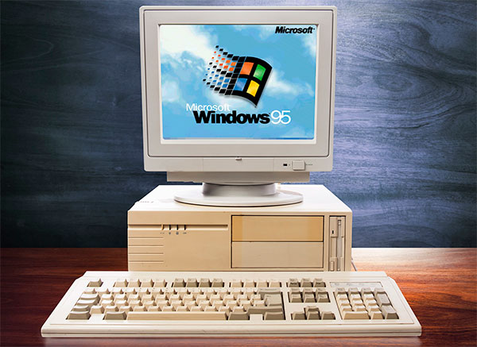Аж до третьої версії Windows залишалася простий графічної надбудовою. І тільки в 1995 році з'явилася Windows 95, яка стала першою в сімействі 9х. Пізніше в цьому сімействі вийшли Windows 98 і Windows ME. Наступною стала лінійка Windows NT, до якої належать всі знайомі користувачам комп'ютерні системи, починаючи з Windows 2000. Лінійка актуальна, останні версії системи також відносяться до неї. Особливо примітна система NT тим, що під нею виходять і окремі системи для серверів.
Windows 1.0
Перша версія цієї операційної системи - Windows 1.0 побачила світ у листопаді 1985 року. Windows 1.0 Вона вміла зовсім трохи і була швидше графічною оболонкою для MS-DOS, проте ця система дозволяла користувачу запускати кілька программ одночасно. Головною незручністю при роботі з Windows 1.0 було те, що при відкриті вікна вони не могли накладатися один на одного (щоб збільшити розміри одного вікна, доводилося зменшувати розміри вікна поруч). Крім того, для Windows 1.0 було написано занадто мало програм, тому дана система не отримала широкого розповсюдження.
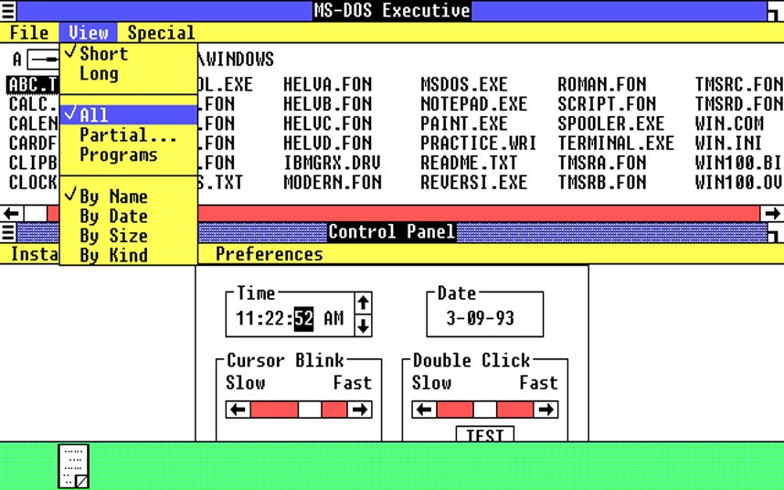Ілюстрація роботи Windows 1.0
Windows 2.X.
У наступному масштабному релізі Windows були представлені знамениті Excel і Word - ще два наріжні камені в історії програмного забезпечення. Але не менш важливу роль в успіху Windows відіграла програма Aldus PageMaker, яка раніше була доступна тільки користувачам Macintosh. Саме ця програма принесла Windows велику популярність у 1987 році.
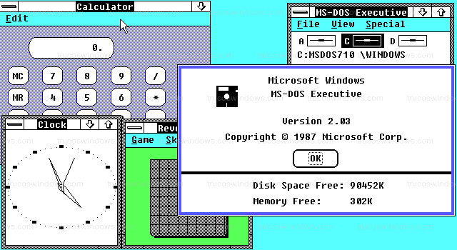Ілюстрація роботи Windows 2.X
Windows 3.X (Травень 1990)
Поліпшення багатозадачності, впровадження віртуальної пам'яті та оновлення дизайну нарешті дозволили інтерфейсу Windows конкурувати з інтерфейсом Macintosh. Разом із Windows 3.1 також з'явилося поняття «Мультимедійного ПК»: привід CD-ROM та звукові карти стали останнім писком моди у 1990-х. Досягши 10 000 000 проданих копій, версія 3.0 стала не лише основним джерелом доходу для Microsoft, а й величезним успіхом у світі ІТ.

Ілюстрація роботи Windows 3.X
Windows NT (Липень 1992)
Microsoft поєднала зусилля з IBM для розробки наступника DOS. Однак співпраця тривала недовго, а те, що було названо OS/2, стало новою Windows NT. Windows 3.11 і NT розроблялися паралельно (разом), доки були об'єднані в Windows XP. Завдяки покращеній мережній підтримці у Windows NT та новій файловій системі NTFS, Microsoft наздогнала Novell і стала основним гравцем на ринку серверів.
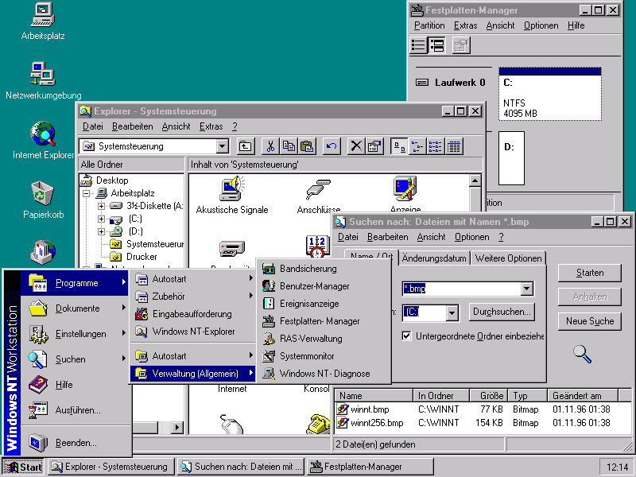Ілюстрація роботи Windows NT
Windows 95 (Серпень 1995)
Microsoft втілила в життя ідеї, що з'явилися з моменту випуску версії NT, під кодовою назвою Chicago, представивши їх споживачеві (наприклад, 32-розрядна система та покращене керування пам'яттю). Однак необхідність зворотної сумісності і той факт, що не весь код змінили на 32-розрядний, зрештою призвів до збоїв: Windows 95 зіткнулася з великими проблемами продуктивності та стабільності. У пізніших версіях Windows 95 з'явився знаменитий браузер Internet Explorer та підтримка USB, яка нам сьогодні знайома.
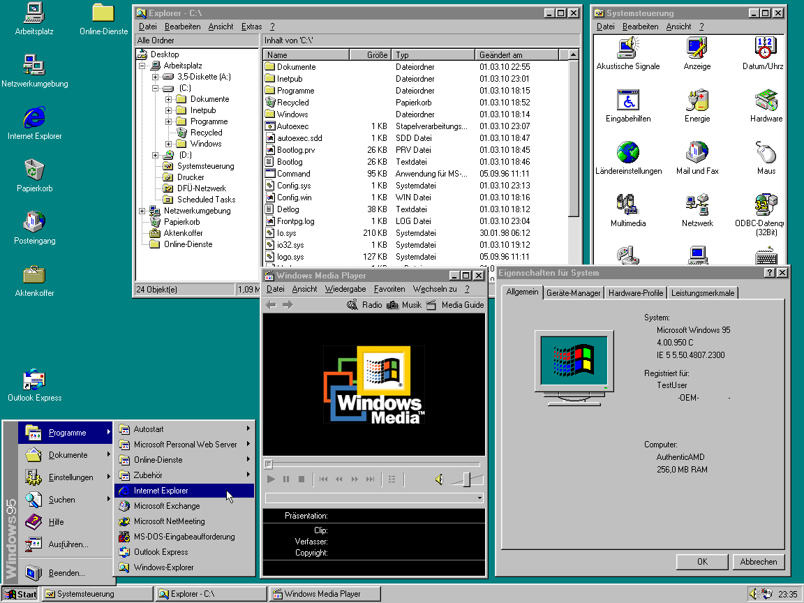Ілюстрація роботи Windows 95
Windows 98 (Червень 1998)
У Windows 98, розробленій під кодовою назвою Memphis, Microsoft значно покращила підтримку USB. Адже Windows 95 не забезпечила його стабільну реалізацію. Хоча FAT32 вперше представили в оновленні для Windows 95, вона залишалася молодою файловою системою і стала ще популярнішою, ніж раніше. Завдяки цьому дискові розділи завбільшки від двох гігабайт стали більш поширеними. 1998 також був роком юридичного розбирання «Сполучені Штати проти Microsoft»: питання стосувалося легітимності постачання попередньо встановленого браузера Internet Explorer у кожній копії Windows.
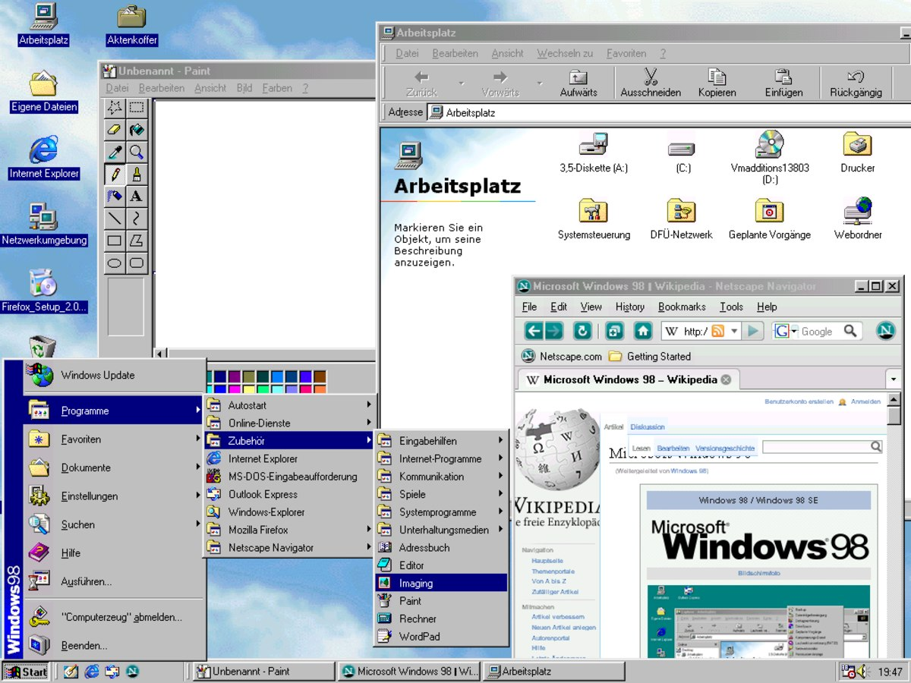Ілюстрація роботи Windows 98
Windows 2000 (Лютий 2000)
У наступній версії Windows 2000 з'явилася нова служба Active Directory. Хоча ця версія була спрямована на бізнес-ринок, Windows 2000 також постачалася з покращеним API DirectX. Це ознаменувало перший випадок, коли багато сучасних ігор запускалися на комп'ютерах з NT. В одному аспекті, однак, Windows 2000 була останньою у своєму роді: у її версіях-наступниках було введено новий (і суперечливий) механізм активації продукту.
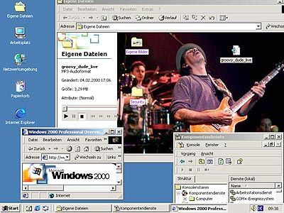Ілюстрація роботи Windows 2000
Windows ME (Вересень 2000)
Незабаром Microsoft опублікувала Millenium Edition - наступника Windows 98 і останню операційну систему на базі DOS від Microsoft. У версії ME увага була зосереджена на мультимедіа: у ній Microsoft представила Windows Movie Maker і оновила стандартну мультимедійну програму платформи — програвач Windows Media Player до 7 версії. Крім того, з'явилася утиліта System Restore – простий інструмент відновлення системи. Time Machine від Apple, звичайно, не порівняти з новою утилітою Microsoft, але вона не з'являлася ще кілька років.
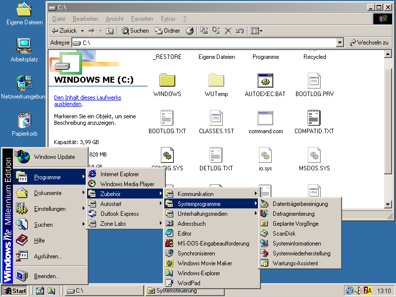Ілюстрація роботи Windows ME
Windows XP (Серпень 2001)
Windows XP ознаменувала особливе возз'єднання: вона нарешті об'єднала Windows 95/98/ME і NT/2000. Спочатку в новій XP було кілька хворобливих недоліків, які стосувалися передусім безпеки. Саме вони змусили Microsoft опублікувати цілих три пакети оновлень протягом терміну підтримки XP. Однак це не завадило Windows XP стати флагманом серед операційних систем і залишатися ним ще 6 років – довше, ніж будь-яка інша версія Microsoft Windows.
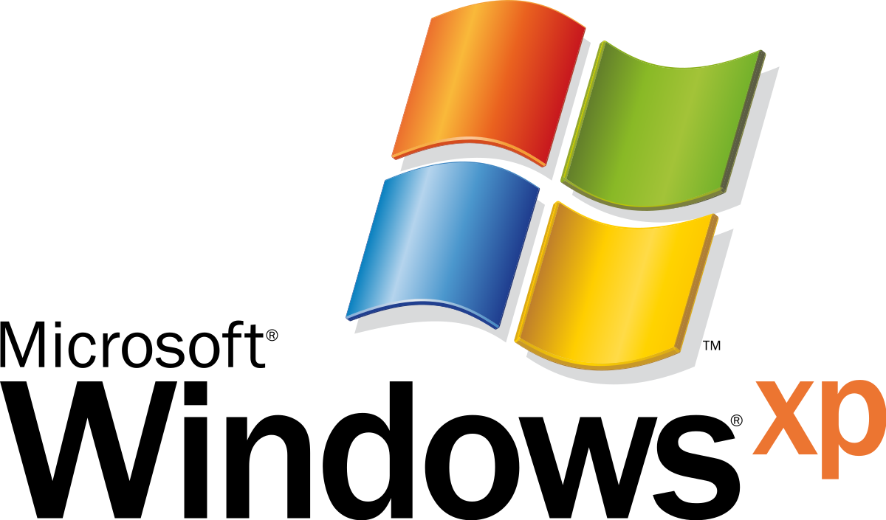Windows Vista (Січень 2007)
Microsoft представила Windows Vista в абсолютно новому дизайні завдяки Windows Aero - комплексу технічних рішень графічного інтерфейсу користувача. У ній було багато невеликих змін: наприклад, заміна знайомої кнопки «Пуск» на іконку з логотипом Windows. Крім того, Vista показала перероблену і (в порівнянні з Windows XP) суворішу систему дозволів під назвою «Контроль облікових записів користувачів». Що стосується нових програм, у Vista дебютували Windows Calendar, Windows DVD Maker і кілька нових ігор.
Слід зазначити, що Windows Vista була презентована ще листопаді 2006 року, але у вигляді корпоративної версії.
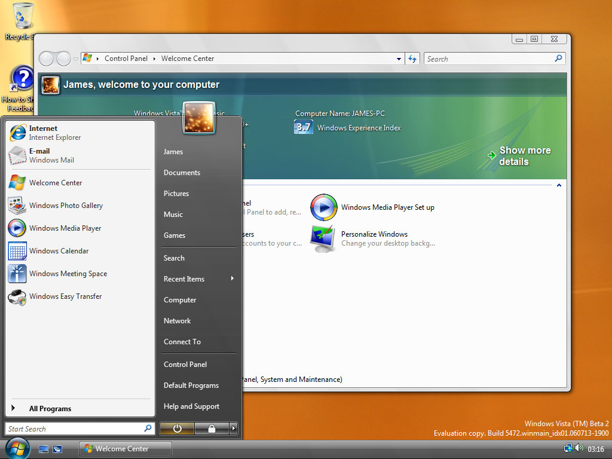Ілюстрація роботи Windows Vista
Windows 7 (Жовтень 2009)
Windows 7 - покращена платформа в багатьох областях: вона завантажувалася швидше, підтримувала multi-touch, в ній було покращено керування вікнами та багато іншого. В інших областях система пішла назад: новий контроль облікових записів Vista став менш нав'язливим, і щойно введена бічна панель (разом з кількома додатками) була повністю видалена.
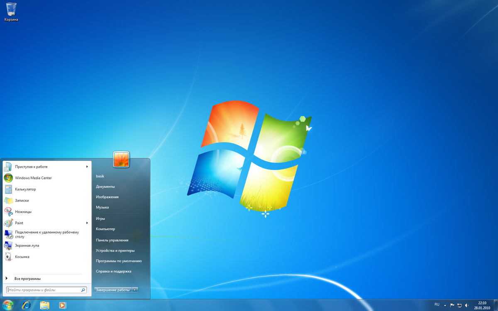Ілюстрація роботи Windows 7
Windows 8 (Жовтень 2012)
Windows 8 – найширше візуальне оновлення в останніх версіях. У Windows 8 представлений не тільки новий погляд на ОС загалом, але й новий UI і UX. Вона перейняла популярний стиль Flat та ввела у тренд повноекранний режим вікна. Крім того, Windows 8 забезпечила підтримку USB 3.0 та запустила Windows Store.
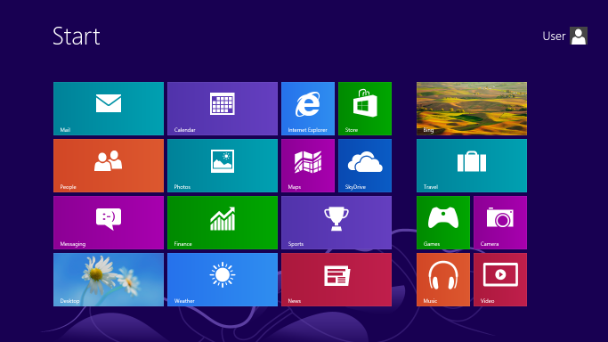Ілюстрація роботи Windows 8
Windows 10 (Липень 2015)
Microsoft вирішила назвати своє останнє оновлення Windows 10, пропустивши версію 9. Однією з причин може бути масштаб і важливість проекту: Windows 10 забезпечує загальну платформу для багатьох пристроїв, починаючи зі смартфонів і закінчуючи персональними комп'ютерами. Новинок було багато: Edge - новий браузер за замовчуванням, підтримка входу в систему за допомогою відбитків пальців та розпізнавання облич, а також розумний особистий помічник Cortana. Windows 10 також зламала нові горизонти з погляду ціноутворення: оновлення з Windows 7 і 8 було безкоштовним протягом першого року з моменту оновлення оновлення.
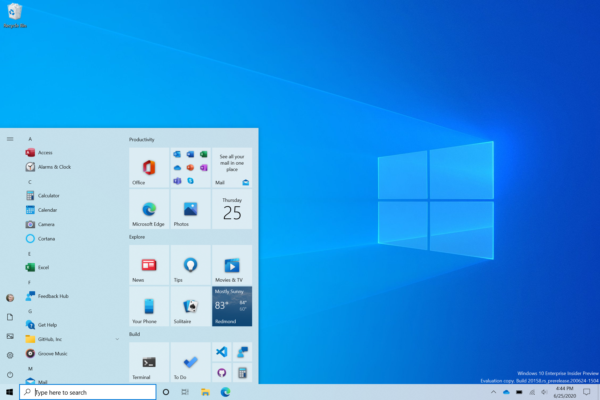Ілюстрація роботи Windows 10
На сьогоднішній день - це сама просунута версія. Розробники намагалися зробити її більш популярною і для цього запустили безкоштовні оновлення. Що є дуже зручним. У порівнянні з іншими версіями операційних систем Windows, Windows 10 дуже легко встановлюється і працює. Просто потрібно завантажити систему, задати параметри на установчому носії і встановити. Необхідні вимоги до Windows 10 - це мати 2 Gb оперативки і кількість ядер на процесорі не менше 1.
Як встановити Windows 10
Особливості Windows 10 для комп'ютерів
Актуальною версією операційної системи Windows є версія Windows 10. І ось головні її особливості:
- Поліпшена функціональність робочого столу;
- Прискорена і оптимізована робота всієї системи;
- Підвищена захищеність;
- Інтегрований голосовий помічник зі штучним інтелектом Cortana (який отримав ім'я на честь персонажа з гри Halo);
- Ексклюзивно для Windows 10 поставляється Direct X 12, що особливо цікаво буде хардкорним геймерам;
- Універсальність додатків під консолі, комп'ютери і мобільні пристрої.
Система регулярно оновлюється і доопрацьовується. Нові комп'ютери і ноутбуки продаються вже з "десяткою" під кришкою, а користувачі офіційної системи Windows 8 (і 8.1) могли безкоштовно оновитися до останньої версії аж до 29 липня 2016 року. Однак, можливості оновитися залишилися і зараз, але виключно для користувачів з обмеженими можливостями.